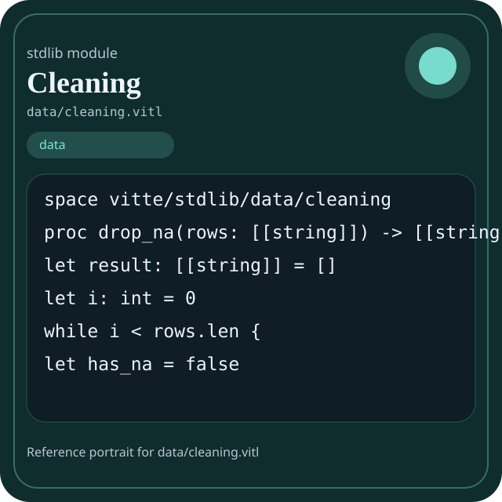

Stdlib module data/cleaning.vitl
This page is a wiki-style reference for one concrete stdlib file. It explains what the file owns, where it fits in the family, and how to decide whether this is the right surface to depend on.

data/cleaning.vitl.Family: data
Kind: public stdlib surface
Page style: this reference follows the same “encyclopedic card + portrait + usage contract” logic as the keyword pages, but for stdlib modules.
Summary
- Overview
- Purpose
- Taxonomy
- Implementation profile
- Top-level API inventory
- Position in family
- Declaration map
- Representative signatures
- How to use this module
- User example
- Keyword coverage
- Source shape
- Source landmarks
- Source organization
- Complete API catalog
- Integration boundaries
- Composition guidance
- Relationship table
- Neighbor modules
Overview
| Field | Value |
|---|---|
| Path | data/cleaning.vitl |
| Family | data |
| Kind | public stdlib surface |
| Line count | 92 |
| Declared procedures | 5 |
| Declared forms/picks | 0 |
`data/cleaning.vitl` is a public stdlib surface inside the `data` family. It should be read as one focused slice of the broader family responsibility: Dataset-oriented helpers such as schema, transform, merge, cleaning, and statistics.
Purpose
This file should be chosen because of responsibility, not because its name “sounds close enough”. Inside the data family, it carries one focused part of the contract and keeps that responsibility separate from neighboring concerns.
- A telemetry report can be cleaned, merged, transformed, and summarized before export.
- A schema page should explain what a valid record looks like before code samples start.
Taxonomy
Think of this page as a generated encyclopedia entry rather than a hand-written tutorial. The goal is to show what kind of module this is, how dense it is, and what reading strategy makes sense before depending on it.
- Compact procedure surface: this file is small enough to read end-to-end before depending on it.
- Minimal top-level dependencies: the module reads as mostly self-contained from its opening declarations.
Implementation profile
This profile is inferred directly from the source text. It does not replace reading the file, but it tells you quickly whether the module is mostly declarative, loop-heavy, branch-heavy, or organized around many small exits.
| Signal | Count | What it suggests |
|---|---|---|
if | 6 | Branching density and local decision-making. |
while | 9 | Loop-heavy or iterative implementation style. |
for | 0 | Collection-style traversal at source level. |
match | 0 | Variant-driven branching or grammar-style decoding. |
let | 18 | Local state and intermediate value density. |
give | 5 | Number of explicit exit points and result shaping. |
Top-level API inventory
| Surface | Items |
|---|---|
| Procedures | drop_na, dedupe, trim_whitespace, fill_na_forward, fill_na_value |
| Forms | none declared at top level |
| Picks | none declared at top level |
| Constants | none declared at top level |
| Exports | none declared at top level |
Imported surfaces
This file does not advertise a top-level `use` surface in its opening declarations. That often means it is either self-contained or an aggregation layer.
Position in family
This file is module 1 of 7 in the data family when ordered by path. By procedure count it ranks 3, and by line count it ranks 1. Those ranks are useful as rough signals of breadth, not as quality judgments.
Declaration map
The declaration map turns raw source into a scan-friendly catalog. It is useful when the file is large enough that a reader wants to orient by kinds of surfaces first.
| Line | Name | Kind | Role |
|---|---|---|---|
| 1 | vitte/stdlib/data/cleaning | space | Declares the namespace that anchors this file in the stdlib tree. |
| 3 | drop_na | proc | Represents one top-level surface in the file contract and should be read as part of the module boundary. |
| 24 | dedupe | proc | Represents one top-level surface in the file contract and should be read as part of the module boundary. |
| 54 | trim_whitespace | proc | Represents one top-level surface in the file contract and should be read as part of the module boundary. |
| 70 | fill_na_forward | proc | Represents one top-level surface in the file contract and should be read as part of the module boundary. |
| 74 | fill_na_value | proc | Represents one top-level surface in the file contract and should be read as part of the module boundary. |
The table is exhaustive for top-level declarations of the selected kinds. This file declares 6 matching surfaces.
Representative signatures
These signatures are shown in source order so the page keeps the feel of a reference manual, not just a keyword cloud.
proc drop_na(rows: [[string]]) -> [[string]] {(line 3)proc dedupe(rows: [[string]]) -> [[string]] {(line 24)proc trim_whitespace(rows: [[string]]) -> [[string]] {(line 54)proc fill_na_forward(rows: [[string]]) -> [[string]] {(line 70)proc fill_na_value(rows: [[string]], fill_value: string) -> [[string]] {(line 74)
How to use this module
Start by reading the file as an ownership boundary. Ask three questions: what enters this module, what stable types or procedures it exports, and what adjacent module should stay outside of it.
- Read
spaceand top-level imports first so the ownership boundary ofdata/cleaning.vitlis explicit. - Traverse procedures in source order; the early helpers usually explain the naming and numeric conventions used later.
- Only after that compare neighbor modules, because the right boundary choice matters more than memorizing one helper name.
User example
This example is generated from the actual stdlib module surface. Its job is not to be the smallest snippet possible; its job is to show a realistic consumer-shaped file that exercises the module and mirrors the language keywords the module itself relies on.
space demo/data_cleaning
proc run_example() -> string {
let entries = drop_na([["alpha"], ["beta"]])
let ready: bool = drop_na([["alpha"], ["beta"]])
let failed: bool = false
let stable: bool = ready and true
let fallback: bool = ready or false
let idx: int = 0
let count: int = 0
while idx < entries.len {
set count = count + 1
set idx = idx + 1
}
if not ready {
give "not-ready"
} else {
give "ok"
}
}Keyword coverage
This table makes the “all keywords of the module” requirement auditable. It compares the detected Vitte keywords in the source file with the generated consumer example above.
| Keyword | Present in module source | Used in generated user example |
|---|---|---|
space | yes | yes |
proc | yes | yes |
let | yes | yes |
set | yes | yes |
if | yes | yes |
else | yes | yes |
while | yes | yes |
give | yes | yes |
true | yes | yes |
false | yes | yes |
and | yes | yes |
or | yes | yes |
not | yes | yes |
The generated snippet exercises every detected Vitte keyword used by this module.
Source shape
space vitte/stdlib/data/cleaning
proc drop_na(rows: [[string]]) -> [[string]] {
let result: [[string]] = []
let i: int = 0
while i < rows.len {
let has_na = false
let j: int = 0
while j < rows[i].len {
if rows[i][j] == "" or rows[i][j] == "NA" or rows[i][j] == "null" {
set has_na = trueThe excerpt is not meant to replace the file. It exists to make the module recognizable at first glance, the same way a Wikipedia infobox helps the reader orient before reading the whole article.
Source landmarks
Large files are easier to retain when they have visible landmarks. When the source contains explicit section banners, they are surfaced here; otherwise the first major declarations are used as anchors.
- Line 1:
space vitte/stdlib/data/cleaning - Line 3:
proc drop_na(rows: [[string]]) -> [[string]] { - Line 24:
proc dedupe(rows: [[string]]) -> [[string]] { - Line 54:
proc trim_whitespace(rows: [[string]]) -> [[string]] { - Line 70:
proc fill_na_forward(rows: [[string]]) -> [[string]] { - Line 74:
proc fill_na_value(rows: [[string]], fill_value: string) -> [[string]] {
Source organization
When a file carries its own internal chaptering, those chapters usually reveal the intended reading order better than a flat symbol list. This section reconstructs that organization from the source itself.
File surfaces
Top-level items: 6. Procedures: 5. Data surfaces: 0. Constants: 0.
First visible names: vitte/stdlib/data/cleaning, drop_na, dedupe, trim_whitespace, fill_na_forward, fill_na_value
Complete API catalog
This catalog is the exhaustive file-level index for the module. It is intentionally closer to a generated encyclopedia appendix than to a tutorial summary.
Procedures
| Line | Name | Signature | Role |
|---|---|---|---|
| 3 | drop_na | proc drop_na(rows: [[string]]) -> [[string]] { | Represents one top-level surface in the file contract and should be read as part of the module boundary. |
| 24 | dedupe | proc dedupe(rows: [[string]]) -> [[string]] { | Represents one top-level surface in the file contract and should be read as part of the module boundary. |
| 54 | trim_whitespace | proc trim_whitespace(rows: [[string]]) -> [[string]] { | Represents one top-level surface in the file contract and should be read as part of the module boundary. |
| 70 | fill_na_forward | proc fill_na_forward(rows: [[string]]) -> [[string]] { | Represents one top-level surface in the file contract and should be read as part of the module boundary. |
| 74 | fill_na_value | proc fill_na_value(rows: [[string]], fill_value: string) -> [[string]] { | Represents one top-level surface in the file contract and should be read as part of the module boundary. |
Integration boundaries
Within data, this file should remain focused. If a future helper changes the host boundary, scheduling boundary, or data-shape boundary, it probably belongs in a neighbor module instead of being added here by convenience.
- Family responsibility: Dataset-oriented helpers such as schema, transform, merge, cleaning, and statistics.
- Family architecture role: Use `data` when the program manipulates rows, records, schemas, or staged transformations instead of one-off scalar logic.
Composition guidance
Choose this module when
- Choose
data/cleaning.vitlwhen the main question is owned by this module rather than by transport, storage, orchestration, or user-interface code. - A telemetry report can be cleaned, merged, transformed, and summarized before export.
- A schema page should explain what a valid record looks like before code samples start.
Pause before extending it when
- Avoid extending this file when the new helper mostly changes the boundary to host I/O, runtime coordination, or foreign integration instead of staying inside
data. - Check nearby modules such as
data/data.vitl,data/dataset.vitl,data/merge.vitlbefore adding convenience wrappers here.
Relationship table
This table keeps the page closer to a real encyclopedia entry: a module is easier to understand when compared with its nearest alternatives in the same family.
| Neighbor | Procedures | Data surfaces | Why compare it |
|---|---|---|---|
data/data.vitl | 1 | 0 | Shares the same family boundary but carries a distinct slice of responsibility. |
data/dataset.vitl | 2 | 0 | Shares the same family boundary but carries a distinct slice of responsibility. |
data/merge.vitl | 6 | 0 | Shares the same family boundary but carries a distinct slice of responsibility. |
data/schema.vitl | 2 | 1 | Shares the same family boundary but carries a distinct slice of responsibility. |
data/stats.vitl | 6 | 0 | Shares the same family boundary but carries a distinct slice of responsibility. |
data/transform.vitl | 2 | 0 | Shares the same family boundary but carries a distinct slice of responsibility. |